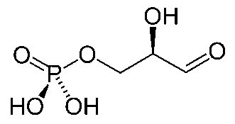

Glyceraldehyde 3-phosphate
|  |
Glyceraldehyde 3-phosphate or G3P is the product of the Calvin cycle. It is a 3-carbon sugar that is the starting point for the synthesis of other carbohydrates.
|
Some of this G3P is used to regenerate the RuBP to continue the cycle, but some is available for molecular synthesis and is used to make fructose diphosphate. The fructose diphosphate is then used to make glucose, sucrose, starch and other carbohydrates.
|
Index
Organic chemistry concepts
Chemistry concepts
Reference
Karp
Ch 3 |